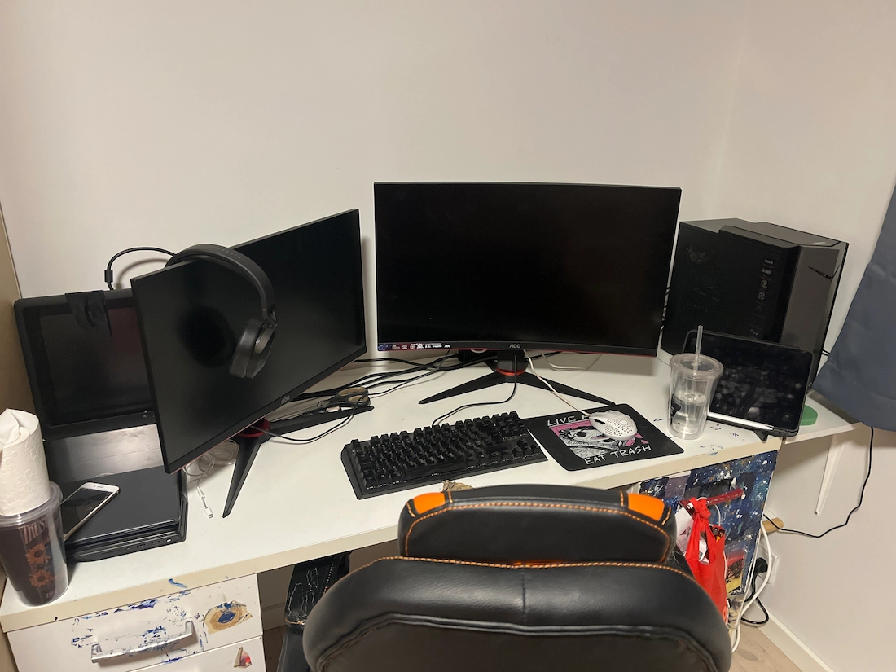

Min computer

Type
Jeg har to skærme, en på 27" som er min main og en på 24", rød LED i min case og masser af plads til spil på mit SSD. Mit SSD er 1 TB, mens mit C-drev er kun 500 GB. Begge mine skærme er AOC, og min pc er Nitro 50.
Specifikationer
- CPU: I5 12400F
- GPU: NVIDIA GeForce RTX 3060
- RAM: 16GB
- Motherboard: Acer Nitro N50-N60